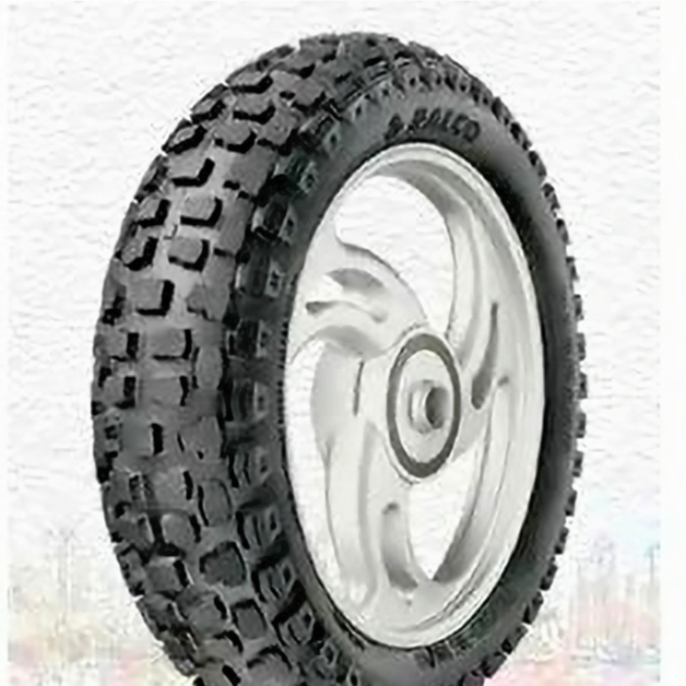
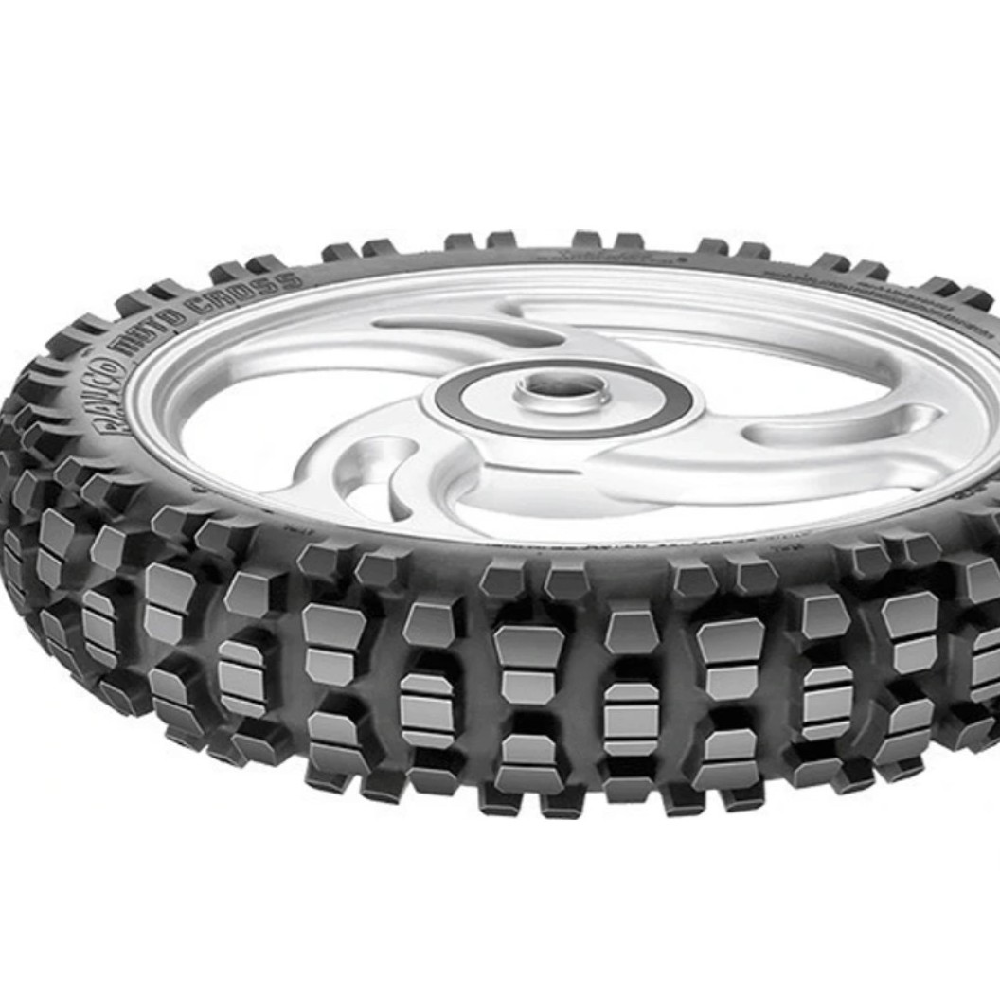

Ralco-3.25.16 3.25.16 Front & Rear Two Wheeler Tyre (Racing Slicks, Street, Tube)


✅Construction Type: Airless,Positioning: Front & Rear,Diameter: 46 cm,Pack of: 1,Used For: Racing Slicks, Street
✅Vehicle Brand-Hero Electric, CFMoto,Maximum Load-350
✅width-46cm,weight-5kg,net quantity-1 two wheeler tyre

Please refer to the size specification before you make your purchase, because tyre sizes vary with vehicle models.